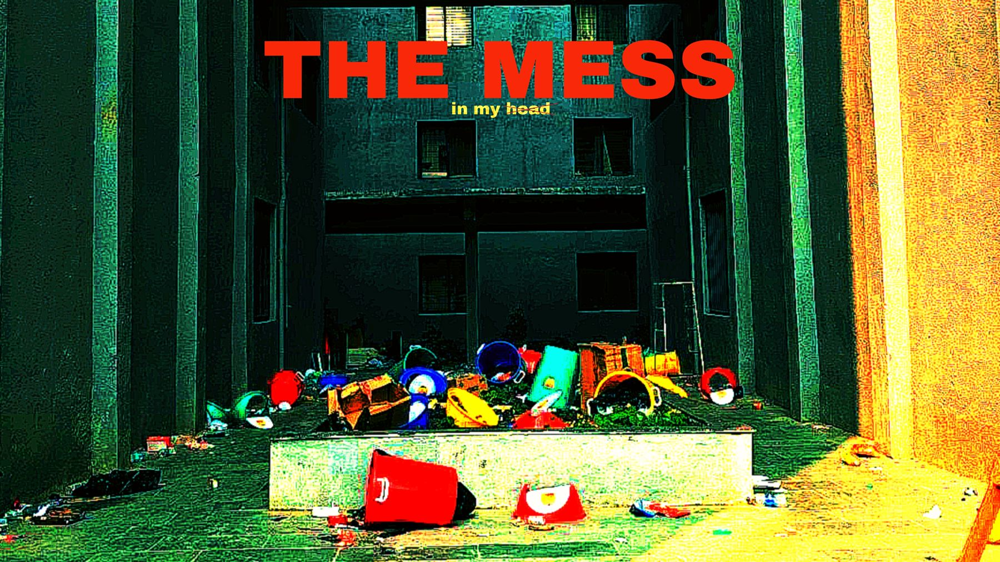
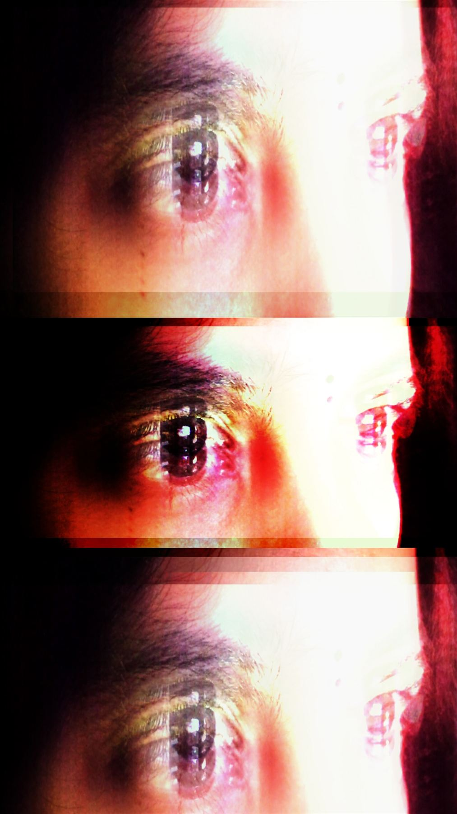

How this site is set.
The working spec for Kagaz & Chiaroscuro: editorial brutalism rooted in Indian materiality. Every specimen below is the live component, rendered from css/kagaz.css.
Sitemap
Home
- Lotus bloom · first visit
- Hero · lotus + Shreya
- 01 Practice · five petals
- 02 Selected plates
- 03 Four ways in · series
- 04 After dark · film strip
- 05 About teaser
- 06 Ledger · by year
- 07 Contact
Archive
- Filter by series · #hash
- Grid view · masonry
- Ledger view · table
Plate
- Matted plate + spec
- Up close · 3:1 crops
- Previous / next
- More from series
About
- Spread + principles
- Print spec · capabilities
- Open to · services
- Contact
Colophon
Primary journey
Navigation stays to three words and a button. Content lives in one data file (js/works.js), so the archive grid, the ledger, the film strip, the series counts and every plate page update together when a plate is added.
Colour
| Pair | Ratio (from the style guide) | Use |
|---|---|---|
| Kajal / Kagaz | 15.8 : 1 · AAA | All body copy on paper |
| Kagaz / Courtyard | 13.2 : 1 · AAA | All copy on dark sections |
| Sindoor / Kagaz | 4.7 : 1 · AA | Italic accent words, indices, links on hover |
| Kajal / Haldi | 9.1 : 1 · AAA | Hover fills, email button, tags |
| Haldi / Kagaz | Not used for text | Too low on paper. Haldi type appears only on Courtyard |
Gradient policy: none, except the chiaroscuro scrim behind text over full-bleed photography. Transitions between paper and courtyard are always a 1.5px rule, never a fade.
Type
46–96px · 0.98 · −0.02em
Pictures I cut up
38–72px · section titles
Selected plates
28–56px · 1.02 · −0.03em
The Mess in my head
28–48px
A dog with opinions.
16–18px · 1.65
A burnt-out bus graded red and amber, mounted on a handmade-paper mat over a block-printed floral, stamped with a Devanagari date.
11–13px · +0.04em · caps
Plate 13 / 29 · 29 Nov 2025 · 3:2
indices, dates, sign-off
०१ ०२ ०३ · २६ ११ २५ · फिर मिलेंगे
Grid & space
| Token | Value | Where |
|---|---|---|
| --section-gap | clamp(80px, 10vw, 140px) | Between major sections (guide minimum 120px on desktop) |
| --margin | clamp(16px, 4.4vw, 64px) | Outer page margin |
| --gutter | 24px (16px on mobile) | Column gap |
| Splits | 7/5 · 4/8 · 5/6 · 3/9 | Hero · plates · spreads · details. Never 6/6 centred stacks |
| Radius | 0 · 2px · 999px | Frames · buttons · tags only |
Components
Four ways in

| Date | Plate | Series | |
|---|---|---|---|
| 29.11.25 |  | २६ ११ २५ | Poster & Type |
| 26.11.25 |  | THE MESS in my head | Poster & Type |
- Date
- 29 Nov 2025
- Format
- 3:2 · 3464 × 2309 px
Motion
| Pattern | Spec |
|---|---|
| Image reveal | Curtain wipe: clip-path from the bottom, 900ms, cubic-bezier(.22,1,.36,1) |
| Headline | Lines rise out of a mask, 90ms stagger |
| Copy | 18px rise + fade, 650ms |
| Button press | 150ms linear; moves 2px into its shadow, 4px on :active |
| Hover fill | Instant Kagaz → Haldi flip, 150ms |
| Image hover | 1.03× scale inside the mat (overflow hidden) |
| Parallax | Matted photos only, 6–12% of viewport travel |
| Page turn | A Kagaz sheet wipes up over the page (380ms) and lifts off the next one; it names the plate being opened |
| Reduced motion | All of the above off; content shown immediately |

Responsive
| Element | Desktop ≥ 1024 | Tablet 768–1023 | Mobile < 768 |
|---|---|---|---|
| Nav | Mono links + button | Same | "Index" button → full-height paper sheet with Devanagari numerals |
| Hero | 7/5 split, plate right | Copy full width, plate centred below | Stacked; CTAs stretch to full width |
| Selected plates | Sticky 4-col meta beside 8-col plate | Plate first, meta in two columns beneath | Plate first; wide crops become 4:3 |
| Series | 4 ruled columns | 2 × 2 | Stacked rows |
| Film strip | Drag + arrows | Swipe + arrows | Swipe; one frame and a peek (72vw) |
| Archive | 4 columns | 3 columns | 2 columns; filters wrap into a grid |
| Plate page | Plate fits one screen, sticky spec | Spec moves under the plate | Same; prev/next stack |
| Type | Fluid clamp() from 46px to 96px display; body 16–18px; mono never under 11px | ||
House rules
Do
- Let Kagaz negative space breathe around bold elements.
- Keep corners sharp (0px) and borders crisp (1.5px).
- Use Sindoor and Acid Haldi sparingly, as sparks.
- Use Devanagari numerals with editorial restraint.
- Hold AA/AAA contrast; Haldi type only on Courtyard.
Don't
- Crowd the page with stickers, starbursts or overlapping collage.
- Use neon lime, hot pink or purple-blue SaaS gradients.
- Use blurred shadows, glassmorphism or rounded cards.
- Add mandalas, lotuses or tourist-brochure motifs.
- Trade body-copy readability for an experimental face.